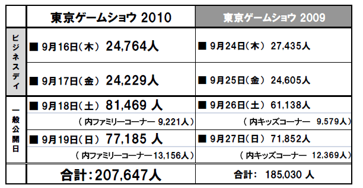

報道関係資料
PDF版はこちら » PDFをダウンロード
2010年9月19日
社団法人コンピュータエンターテインメント協会
日経BP社
「東京ゲームショウ2010」開催結果
過去最高の２０７，６４７人が来場！
出展社数は194の企業・団体、出展小間数は1,458小間
社団法人コンピュータエンターテインメント協会（略称：CESA、会長：和田洋一、所在地：東京都港区西新橋）の主催、日経BP社（社長：平田保雄、所在地：東京都港区白金）の共催で開催した「東京ゲームショウ2010」は、9月16日（木）から19日（日）までの4日間、千葉市・幕張メッセで開催し、総来場者数207,647人となり、東京ゲームショウ史上初の20万人を超えて大盛況のうちに終了しました。
【東京ゲームショウ2010の来場者数と前年比較】

今年で開催20回目を迎えた「東京ゲームショウ2010」では、「世界最大級のイベント」と「アジアNo.1の情報網羅性」という中長期ビジョンを掲げました。14の国と地域から194の企業・団体・学校が出展し、事前に届けられた712タイトルのほか、会期中にも新タイトルが続々と発表されるなど、最新情報を全世界に向けて発信しました。
また、「アジア・ゲーム・ビジネス・サミット」をビジネスデイ初日に開催。中国・日本・韓国・台湾の4カ国・地域から主要企業8社のトップが初めて集結し、国内外の来場者や報道陣を前に、今後のアジアでのゲーム産業の動向を熱く語りあいました。
さらに、今年から新たに企画したコスプレイベントや世界最大級の格闘ゲーム大会「闘劇2010」の併催などにより、東京ゲームショウの新たな魅力を来場者に訴求しました。
本年の「日本ゲーム大賞2010」も、新たに設立した「ゲームデザイナーズ大賞」の受賞作品を発表し、ゲームのさらなる魅力を来場者へ発信するなど、開催20回目の東京ゲームショウに相応しいイベントとなりました。
東京ゲームショウは、引き続き「アジアNo.1の情報網羅性」と「世界最大級のイベント」を目指し、「東京ゲームショウ2011」として、2011年9月15日(木)または16日(金)から9月18日(日)まで、再び幕張メッセで開催する予定です。
来年もどうぞご期待ください。
PDF版はこちら » PDFをダウンロード